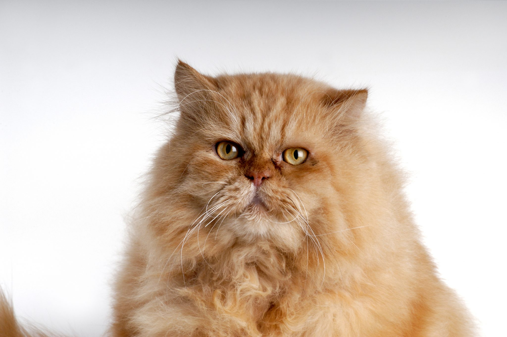

TODO: Transforme o texto "Voltar" abaixo em hiperlink que leva o usuário para a página com o sumário de todos os gatos
VoltarO gato Persa é uma raça braquicefálica, nome dado a característica da conformação craniana, devido ao seu focinho ser mais curto ou “achatado”. O que pode resultar na dificuldade da respiração, muitas vezes refletindo em seu comportamento mais tranquilo e quieto.
